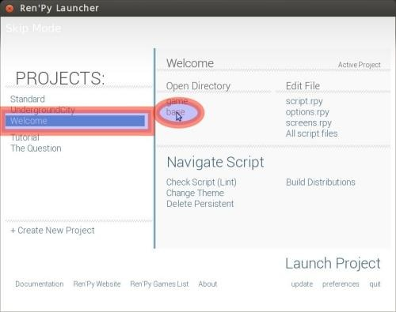
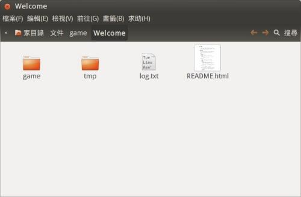
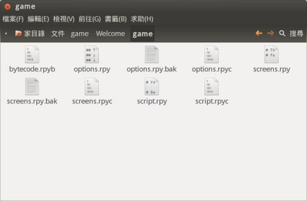
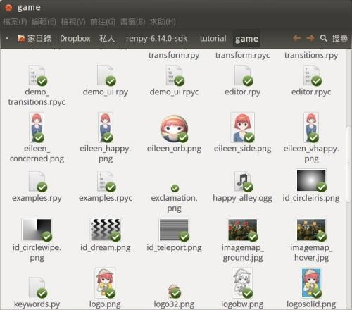
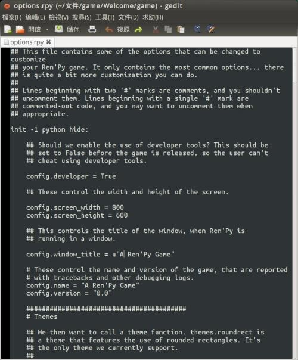
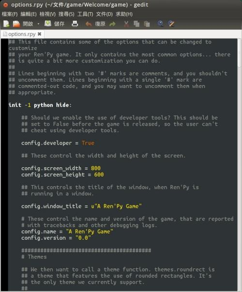
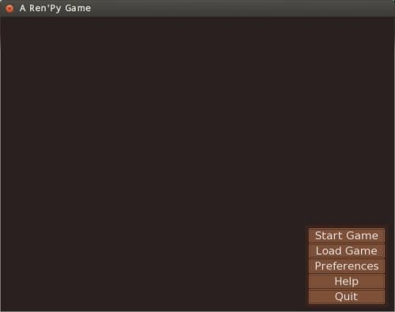
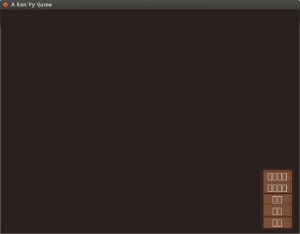
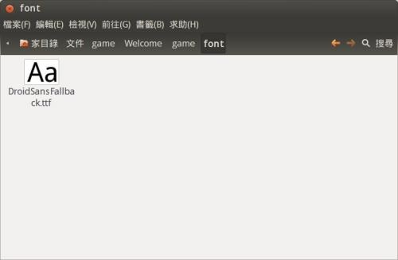
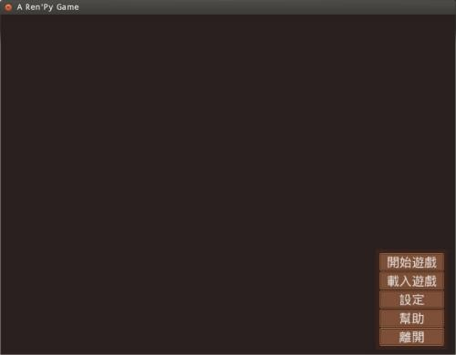

	<!DOCTYPE html PUBLIC "-//W3C//DTD XHTML 1.0 Transitional//EN" "http://www.w3.org/TR/xhtml1/DTD/xhtml1-transitional.dtd">
	<html xmlns="http://www.w3.org/1999/xhtml" xml:lang="en-gb" lang="en-gb" >
		<head>
			  <meta http-equiv="content-type" content="text/html; charset=utf-8" />
  <meta name="robots" content="noindex, nofollow" />
  <meta name="keywords" content="OSSFNL810" />
  <meta name="title" content="《雪凡與好朋友們的 Ren'Py 遊戲引擎初學心得提示》第二回：基本觀念與前置作業！" />
  <meta name="description" content="嗨！各位觀眾大家好，我是雪凡。歡迎各位螢幕前的觀眾們準時收看「雪凡與好朋友們的 Ren'Py 遊戲引擎初學心得提示」第二回：基本觀念與前置作業！ 本回，雪凡將概略講述一個 Ren'Py 遊戲專案的資料夾結構，並從不會寫程式的人的角度，講述遊戲腳本檔案的基本觀念。除此之外，還有說明如何讓 Ren'Py 支援中文、使用網路資源的注意事項，並附上可幫您更輕鬆編寫遊戲腳本的額外贈品，敬請各位愉快享用。" />
  <meta name="generator" content="" />
  <title>《雪凡與好朋友們的 Ren'Py 遊戲引擎初學心得提示》第二回：基本觀念與前置作業！</title>
  <link href="../../favicon.ico" rel="shortcut icon" type="image/x-icon" />
  <link rel="stylesheet" href="../../components/com_gantry/css/gantry.css" type="text/css" />
  <link rel="stylesheet" href="../../components/com_gantry/css/grid-12.css" type="text/css" />
  <link rel="stylesheet" href="../../components/com_gantry/css/joomla.css" type="text/css" />
  <link rel="stylesheet" href="../../templates/rt_quantive_j15/css/joomla.css" type="text/css" />
  <link rel="stylesheet" href="../../templates/rt_quantive_j15/css/style1.css" type="text/css" />
  <link rel="stylesheet" href="../../templates/rt_quantive_j15/css/light-body.css" type="text/css" />
  <link rel="stylesheet" href="../../templates/rt_quantive_j15/css/demo-styles.css" type="text/css" />
  <link rel="stylesheet" href="../../templates/rt_quantive_j15/css/template.css" type="text/css" />
  <link rel="stylesheet" href="../../templates/rt_quantive_j15/css/typography.css" type="text/css" />
  <style type="text/css">
    <!--
#rt-main-surround ul.menu li.active > a, #rt-main-surround ul.menu li.active > .separator, #rt-main-surround ul.menu li.active > .item, #rt-main-surround .square4 ul.menu li:hover > a, #rt-main-surround .square4 ul.menu li:hover > .item, #rt-main-surround .square4 ul.menu li:hover > .separator, .roktabs-links ul li.active span {color:#0088B5;}
a, #rt-main-surround ul.menu a:hover, #rt-main-surround ul.menu .separator:hover, #rt-main-surround ul.menu .item:hover {color:#0088B5;}
    -->
  </style>
  <script type="text/javascript" src="../../components/com_jcomments/js/jcomments-v2.1.js%3Fv=2"></script>
  <script type="text/javascript" src="../../components/com_jcomments/libraries/joomlatune/ajax.js"></script>
  <script type="text/javascript" src="../../media/system/js/mootools.js"></script>
  <script type="text/javascript" src="../../media/system/js/caption.js"></script>
  <script type="text/javascript" src="../../components/com_gantry/js/gantry-buildspans.js"></script>
  <script type="text/javascript" src="../../components/com_gantry/js/gantry-inputs.js"></script>
  <script type="text/javascript">

			window.addEvent('domready', function() {
				var modules = ['rt-block'];
				var header = ['h3','h2','h1'];
				GantryBuildSpans(modules, header);
			});
		
InputsExclusion.push('.content_vote','#rt-popup')
  </script>
		</head>
		<body  class="backgroundlevel-low backgroundstyle-style8 bodylevel-med bodystyle-light cssstyle-style1 logostyle-dark font-family-helvetica font-size-is-default menu-type-fusionmenu col12 ">
			<div id="rt-main-surround">
				<div class="rt-container">
					<div class="rt-block">
						<div id="rt-mainbody">
					    	
<div class="rt-joomla ">
	<div class="rt-article">
		
				<div class="rt-headline"><h1 class="rt-article-title">《雪凡與好朋友們的 Ren'Py 遊戲引擎初學心得提示》第二回：基本觀念與前置作業！</h1>		</div>
		<div class="clear"></div>
		
		
		
				<div class="rt-articleinfo">
						<div class="rt-article-icons">
				<a href="8836--renpy-%3Ftmpl=component&amp;print=1&amp;layout=default&amp;page=.html#" onclick="window.print();return false;"><span class="icon print"></span></a>									<span class="icon printscreen">
						<a href="8836--renpy-%3Ftmpl=component&amp;print=1&amp;layout=default&amp;page=.html#" onclick="window.print();return false;"></a>					</span>
							</div>
			
			<span class="rt-date-posted">
						 Created at			Thursday, 18 October 2012 15:05						&nbsp;&nbsp;&nbsp;&nbsp;						Last Updated on Friday, 26 October 2012 09:32						</span>

						<span class="rt-author">
				Written by 林雪凡			</span>
				
					</div>
		
		
		<p>嗨！各位觀眾大家好，我是雪凡。歡迎各位螢幕前的觀眾們準時收看「雪凡與好朋友們的 Ren'Py 遊戲引擎初學心得提示」第二回：基本觀念與前置作業！</p>
<p>本回，雪凡將概略講述一個 Ren'Py 遊戲專案的資料夾結構，並從不會寫程式的人的角度，講述遊戲腳本檔案的基本觀念。除此之外，還有說明如何讓 Ren'Py 支援中文、使用網路資源的注意事項，並附上可幫您更輕鬆編寫遊戲腳本的額外贈品，敬請各位愉快享用。</p>


<p>沒錯，或許您已經注意到了，本回的內容看來起相當雜亂而零散。事實上，這點節目製作人（我）也感到相當困擾。</p>
<p>雖然希望能儘快讓各位進入遊戲製作實戰中，但在這之前，需要預先準備、解說的東西又實在太多......老實說，本回節目已經重製了三次，報廢的腳本字數已經超過一萬字......我的上帝、媽祖、魔法少女！</p>
<p>但這一切都是製作遊戲所需要的。是必須的啊！（推眼鏡）</p>
<p>那麼，就讓我們踏穩腳步，一步步開始今日的心得吧。</p>
<br /> <br />
<h2>專案目錄與 Ren'Py 腳本檔案</h2>
<p>為了能有個好的開始，我們先來了解一下 Ren'Py 遊戲的專案目錄架構。</p>
<p>請打開您的啟動器，選擇您上次新建過的專案。並選擇 base 按鈕，將專案的 base 資料夾打開。</p>
<p>如果您已經忘記啟動器要如何操作，請回頭參考第一回的介紹。</p>
<div><a href="../../images/121023/RenPy/renpy2_01_Launcher_project_base.jpg" target="_blank"></a></div>
<br />▲ 圖1：選擇正確專案後，按下 base 按鈕，可以將 base 資料夾打開。
<div><a href="../../images/121023/RenPy/renpy2_02_Dir_Welcome.jpg" target="_blank"></a></div>
<p>▲ 圖2：新專案的 base 資料夾，內容大約是這樣。</p>
<p> </p>
<h3>說明書</h3>
<p>base 資料夾中，你可以看到大而顯眼的 "README.html" 檔案。這就是當前遊戲的說明檔案......說的更直白一點，就是日後會隨遊戲一起發佈出去，可以給玩家看的遊戲使用說明書。</p>
<p>注意，這是給玩家看的，不是給您看的。您看了也沒什麼大用。</p>
<p>當然囉，因為目前的 "README.html" 檔案是由系統自動產生的，所以只包含了遊戲基本操作方式－－像是滑鼠右鍵點了會怎樣 ，中鍵點了又會怎樣。其中人設、背景故事等東西全都沒寫，而且還是英文的。</p>
<p>本說明檔案的內容，各位日後可以自行改寫，怎樣改都行。但現在暫時不用理會它。我們去看其他部份。</p>
<p> </p>
<h3>遊戲程式資料夾</h3>
<p>讓遊戲實際運行所需的「一切」東西，是被放在一旁的 "game" 資料夾中。</p>
<span class="inset-left yellowbox"> <span class="inset-right-title">【無用檔案】</span>除了 "README.html" 與 "game" 資料夾以外，目前 base 資料夾中的其他檔案，都只是些暫時性檔案。他們對遊戲製作完全不重要，您不需要理解，而嫌他們礙眼的話刪掉也無所謂的。當然也可以不管。<br /><br />您日後可能會在 base 資料夾中自行塞入其他東西，到了那時，刪起來就請小心一點了。</span><br /><br /><br /><br /><br /><br /><br /><br />
<p>請打開 game 資料夾。</p>
<div><a href="../../images/121023/RenPy/renpy2_03_Dir_game.jpg" target="_blank"></a></div>
▲ 圖3：新專案的 game 資料夾。檔案不多看起來蠻單純的。
<p>如前所述，game 資料夾中放的是遊戲執行時所需的資源。</p>
<p>因為新建立的遊戲中還沒有圖，也沒有音樂音效，所以這時，在 game 資料夾中，也就只有幾個可憐的「腳本檔」而已。</p>
<span class="inset-left yellowbox"> <span class="inset-right-title">【腳本檔】</span>所謂的腳本檔，就是以 .rpy 為副檔名的檔案。這也是 Ren'Py 開發過程中最重要的檔案。<br /><br />這些腳本檔案，將會定義遊戲怎樣運行。我們日後有七成以上的時間，都會花在學習如何和這些腳本檔案打交道上面。</span><br /><br /><br /><br /><br /><br /><br /><br />
<p>腳本檔案在初期共有三個，分別是 "options.rpy"、"screens.rpy"、"script.rpy"。</p>
<ul>
<li>options.rpy<br />用來設定遊戲專案的各部細項。包括遊戲名稱、解析度、介面風格等等，內容可說是異常繁雜，日後會有專文講述它。</li>
<li>screens.rpy<br />用來設定各種面板造型的地方。包括對話框造型、選單樣式之類的。</li>
<li>script.rpy<br />用來撰寫實際遊戲流程的地方。比方說，遊戲角色的對話、旁白、聲音播放、圖片顯示等等。</li>
</ul>
<p> </p>
<p>至於 game 資料夾中其他的檔案，像是 .rpyb、.rpyc、.bak 這些檔案，都是由程式自動產生的，並不重要。刪掉也無所謂。</p>
<p> </p>
<h4>rpy 腳本檔的「檔名」有什麼用？</h4>
<p>一言以蔽之：腳本檔的檔名－－除了副檔名固定需為 rpy 以外－－其他部份並沒有任何特殊意義！</p>
<p>雖然前面介紹了三個特殊檔案，但其實對於 Ren'Py 來說，只要是放在 game 資料夾下，且副檔名是 .rpy 的檔案。遊戲啟動時，都會被一視同仁地以相同的方式讀取運行。</p>
<p>所以就技術上來說，您也可以在 script.rpy 中寫入遊戲設定，或是手動將 screens.rpy 檔案重新改名。總之，只要您有充份的理由這麼做，那就動手吧；不過我打賭你一定找不到那種理由，所以別這麼幹就對了。</p>
<span class="inset-left yellowbox"> <span class="inset-right-title">【請儘量做到】</span>基本設定應集中於 options.rpy 中；而面板方面的設定，也應放在 screens.rpy 裡面。</span><br /><br /><br /><br /><br /><br />
<p>以上三個基本檔案中，通常只有 script.rpy 會被我們分割切細。</p>
<p>這是因為一個十萬字規模的遊戲，就表示遊戲腳本的份量至少會有十萬字之多，再加上圖片、分歧劇情等等細部操作，要是全部集中在一個檔案中，實在是有點為難人......</p>
<p>總之，檔案安排的原則全在於「容易管理」這項。</p>
<p> </p>
<h3>替遊戲資源做分類</h3>
<p>同樣地，為了方便管理，推荐您在 game 資料夾中加入子目錄。讓各種不同的資源，能夠放在不同的子目錄下面。</p>
<p>比方說如下這般......</p>
<pre>bg/ 	#背景
char/ 	#立繪
side/ 	#side image (對話框旁邊的大頭圖)
ui/ 	#使用者介面用的圖檔
item/ 	#其他非全屏圖片

effect 	#轉場特效濾鏡

music/ 	#音樂
sound/ 	#音效
voice/ 	#語音

movie/ 	#影片

font/ 	#字型
</pre>
<p> </p>
<p>特別強調，替資源分類並非必要，僅僅只是為了方便管理而已。</p>
<p>舉例來說，官方提供的 tutorial 教學示範專案中，game 資料夾內部就因完全沒有分類，而成為一個異常恐怖的負面示範教材......我想您一定不會希望您的專案變成那樣。</p>
<div><a href="../../images/121023/RenPy/renpy2_04_tutorial_game.jpg" target="_blank"></a></div>
▲ 圖4：慘烈的 tutorial/game 資料夾。資源完全沒分類，這樣很難處理。
<p> </p>
<br />
<h2>基本腳本觀念</h2>
<p>請用文字編輯軟體將 options.rpy 檔案打開來看，觀察一下 rpy 檔案的長相。</p>
<div><a href="../../images/121023/RenPy/renpy2_05_options_rpy_no_highlight.jpg" target="_blank"></a></div>
▲ 圖5：options.rpy 檔案最初的樣子。順便一提，雪凡這邊用的編輯器是 gedit，同時使用 Oblivion 的色彩配置。
<p>對於沒寫過程式，英文又相當普通的同學來說，這時恐怕頭暈得想哭了對吧？</p>
<p>想逃走？</p>
<p>哎呀，別急著逃走啦，本章幾乎不會動到 options.rpy 檔案，所以別慌，這裡只是拿它來說明 rpy 的腳本特性。目前您只要隨便翻翻就夠了。</p>
<p>且聽我解說幾個觀念，您就會知道日後該怎麼閱讀 Ren'Py 腳本。</p>
<p> </p>
<h3>行</h3>
<p>Ren'Py 腳本是以「實體行」作為基本單位來運作的。</p>
<p>一言以蔽之，程式會依照順序，一行接一行地執行。上一行執行完成後，這才處理下一行。</p>
<p>提醒一下：因編輯器寬度不足而「自動折行」產生的行，並不算是前述的「實體行」。只有在行尾按 Enter 鍵產生的那種行才算數－－對初學者來說，這點切勿搞混。</p>
<p> </p>
<h3>註解</h3>
<p>在 options.rpy 檔案中，可看到許多 "#" 符號。</p>
<p>這些 # 號的功用是在說明。在同一行中，# 號後面的內容其實是「註解」。</p>
<p>所謂的註解，就是指寫在腳本裡面，但電腦會忽略過去，當作根本沒看到的東西。</p>
<p>換句話說，註解是寫給人看的，而不是給電腦看的。註解可以提醒閱讀這份腳本的人許多事情，比方說提醒某個變數是幹嘛的啦，某段天書般的程式碼有什麼用......總之，可以讓寫程式的人知道這份程式的用途，以後才方便修改與維護它。</p>
<p>不過，聽說也有人在註解中間寫日記，或是對老闆的咒罵什麼的......嗯嗯，怨念太深的人，我們這就不去管他了。</p>
<p> </p>
<h3>變數與指定</h3>
<p>腳本中的 "=" 符號，表示的不是數學中的「等於」，而是「指定」</p>
<p>一言以蔽之，"=" 左邊的「變數」，將會被指定為右邊的「值」。</p>
<p>舉例來說：</p>
<pre>HP = 5           # HP 被指定為 5
MP = 4           # MP 被指定為 4
name = "Luci"    # name 被指定為一串文字：Luci
damage = 3       # damage 被指定為 3
HP = 5 - damage  # HP 被重新指定為 2 （因為 5-3）
</pre>
<p>上例中，HP、MP、name、damage 都是「變數」。</p>
<p>顧名思義，變數是一些「可被改變的數」。您可以將變數理解為一個「容器」，這個容器實際上表達什麼意思，取決於裡面裝了什麼「值」。</p>
<p>以上面的片段為例，變數 "MP"，其實代表著 "4" 這個數字；變數 "name" 代表著 "Luci" 這串文字。</p>
<p>變數的名字有些規則要遵循，這包括：</p>
<ol>
<li>絕對不會用數字開頭</li>
<li>中間不能夾有空白</li>
<li>對大小寫敏感（舉例來說，name1、Name1 與 NAME1 是三個不同變數）</li>
</ol>
<p> </p>
<p>除了以上這些條件外，絕大多數的英數混雜字，都能成為變數名稱。</p>
<p>重新強調一次，您可以透過 "=" 決定這些變數的「值」是什麼。</p>
<p> </p>
<h3>字串</h3>
<p>如前所述。在腳本中隨便打入文字，電腦會將他視為變數。那麼我們又該如何表示「文字本身」呢？</p>
<p>就靠「字串」語法。</p>
<p>「字串」是由兩個 "（雙撇號），又或兩個 '（單撇號）束縛起來的一串文字。您不能直接「用文字代表文字」，因為電腦會將您打進去的文字視為變數或指令對待，所以當您要輸入文字時，就得靠字串。</p>
<p>比方說：</p>
<pre>Luci = "A good girl!"
name = "Luci"        # 變數 name 被指定為 "Luci"

# 以下這行沒有語法錯誤，程式可以執行，但執行結果鐵定不是您想要的意思
name = Luci          # 變數 name 被指定為 "A good girl!"
</pre>
<p>不管是單撇號還是雙撇號，都可以被字串使用。只要兩兩相同地，成對使用就行了。</p>
<p> </p>
<h3>區塊 (block)</h3>
<p>區塊是由許多具有相同程度「縮進」的行，連在一起組成的多行程式碼。</p>
<p>用講得很抽象，乾脆舉例一下：</p>
<pre>label act1:       # 第一個區塊，包含下面三行
    "很久很久以前……"
    "西彷國有一位皇后。"
    "皇后擁有一面巨大的，有著神奇魔力的鏡子"

label act2:       # 第二個區塊，包含下面兩行
    "她有一位漂亮而人見人愛的女兒，這位女兒擁有雪白的皮膚與蘋果般的臉頰，名字叫白雪"

                  # 沒有實際功能的行－－包括註解與空行－－並不會打斷區塊

    "不過身為繼母，皇后發現，自己好像不太受到女兒的歡迎。"

label act3:       # 第三個區塊，僅僅包含下面一行
    "皇后感到煩惱，於是她向巨大的鏡子提出問題……"
"「魔鏡啊魔鏡，請告訴我，我是不是被白雪討厭了？」"  # 這行變更了縮進，就不包含在原本的區塊之內了。
</pre>
<p> </p>
<br />
<p>理想狀況是，每級縮進都是四個半形空白。不過實務上，使用 tab 或不同數量的空白也是被允許的。唯一需注意的是，相同一個區塊中，縮進的量要「完全相同」。</p>
<p>區塊幹什麼用的相當囉唆難懂，三言兩語不容易解釋清楚。勉強用一句話來解釋的話：區塊可以將程式碼給聚集起來，供遊戲集中調派使用。</p>
<p>......這樣說好像會讓觀眾更加困惑的樣子。稍微說清楚一點好了。</p>
<p>前面曾經提過，程式是一行接一行執行的，這基本上沒錯。但在需要「進入區塊」的場合，有時卻有例外－－是的，遊戲程式可能「直接跳過整個區塊」。</p>
<p>您可以觀察一下上面的範例腳本，區塊開頭前一行，總會見到一個用 ":" （冒號）結尾的前導語句。比方說 "label act2:" 這樣。</p>
<p>透過各式各樣有著不同功能的前導語句，後方區塊內的程式碼，就有可能會被跳過。這些程式碼可能只會在某種特殊狀況下才會執行，又或是當其他程式碼在別處「呼叫」它時，它才會掉頭回來實際運作。總之，區塊內的東西，究竟會在什麼狀況下被執行，是由前導語句決定的。</p>
<p>嘿呀？果然還是有點困惑吧？沒關係啦，區塊這種東西在腳本中確實常常見到。但您現在不用完全搞懂它，日後再作觀察就好。</p>
<p>暫時，您只要記住「縮進本身是有意義的」就可以了。</p>
<p>除非您知道自己在幹嘛，否則不要變更縮進！遊戲會壞掉的。</p>
<p> </p>
<h2>贈品</h2>
<p>程式碼很難讀？頭很暈？</p>
<div><a href="../../images/121023/RenPy/renpy2_05_options_rpy_no_highlight.jpg" target="_blank"></a></div>
▲ 圖5：options.rpy 檔案於 Gedit 編輯器。
<p>對於使用 Vim (GVim) 與 Gedit 編輯器的用戶們，為了替大家減緩編寫腳本時的頭暈症狀，雪凡有些禮物要送給大家。</p>
<p> </p>
<h3>語法高亮與編輯器支援</h3>
<p>Vim 與 Gedit 編輯器的用戶們，咱在此提供語法高亮與編輯器支援。就看各位要不要用了。</p>
<p>如果您用的編輯器不是以上這兩個，很可惜本節目暫時沒法提供您幫助，或許您該去網路上面搜搜，看看有沒有人已經寫了不錯的外掛程式，或許能幫上您的忙。當然囉，您也可以在沒有語法高亮的狀況下寫腳本－－其實這也不算太難啦。只要把 rpy 的語法規則弄懂就可以了。</p>
<p>或是說，您也可以直接用 Ren'Py 內建的 jEdit 編輯器來編寫遊戲。jEdit 本身是有提供 rpy 高亮支援的。雖然我覺得 jEdit 不好用......總之各位就自行斟酌囉。</p>
<p> </p>
<h4>Vim 用 Ren'Py 語法高亮定義檔案</h4>
Vim (<a target="_blank" href="https://www.vim.org/">https://www.vim.org/</a>) 是種初學者難以上手，但極其萬能的編輯器。透過這個檔案，Vim 編輯器的使用者將能夠在 rpy 檔案編輯時獲得語法高亮支援。
<p>這個語法高亮檔案的原作者為 Musashi Aharon，他的原作品可在以下位置找到：<a target="_blank" href="https://yesoidos.sourceforge.net/upload/renpy.vim">https://yesoidos.sourceforge.net/upload/renpy.vim</a>。</p>
<p>和原版相比，雪凡修改的版本，額外增加了大量關鍵字高亮區段。在下修改的版本請到這裡下載：<a target="_blank" href="../../tw/papers-and-teaching-materials/doc_download/1625-vim-renpytar.html">https://www.openfoundry.org/tw/papers-and-teaching-materials/doc_download/1625-vim-renpytar2</a>。</p>
<p>安裝方式為：</p>
<p>將壓縮包 (vim-renpy.tar.bz2) 解壓縮後，放到「Vim 設定資料夾」下面。</p>
<ol>
<li>在 Linux 中，設定資料夾為 "~/.vim"；</li>
<li>若在 Windows 中，依照 Windows 版本不同，設定資料夾可能是在 "c:\documents and settings\{使用者名稱}\vimfiles" 或 "c:\Users\{使用者名稱}\vimfiles"。您得稍微找一下......</li>
</ol>
<p> </p>
<h4>Gedit 用 Ren'Py 語法高亮定義檔案</h4>
<p>Gedit (<a target="_blank" href="https://projects.gnome.org/gedit/">https://projects.gnome.org/gedit/</a>) 是一款大巧不工，表面看來簡單易用，實則功能異常豐富的編輯器。主要運作在 Gnome 環境下，但也可在 windows 系統中使用。</p>
<p>本語法高亮檔案的原作者為 Koichi Akabe，作品採用 GPL-3.0+ 授權釋出，總之可以免費使用。您可到這一頁來下載：<a href="https://vbkaisetsu.sky-air.net/wordpress/2012/08/gtksourceview-/" target="_blank">https://vbkaisetsu.sky- air.net/wordpress/2012/08/gtksourceview-</a> 。</p>
<p href="https://www.openfoundry.org/tw/papers-and-teaching-materials/doc_download/1622-gtksourceview-renpytar">雪凡修改的版本也採相同授權釋出。和原版語法高亮檔案相比，差異在於增加了不少內建常數的高亮。請到這裡下載：<a target="_blank" href="../../tw/papers-and-teaching-materials/doc_download/1622-gtksourceview-renpytar.html">https://www.openfoundry.org/tw/papers-and-teaching-materials/doc_download/1622-gtksourceview-renpytar</a></p>
<p>安裝方式為：</p>
<p>將附件壓縮檔 (gtksourceview-renpy.tar.bz2) 內的 "renpy.lang" 檔案，放到以下路徑下面（如果路徑原本不存在請自行新建）。</p>
<pre>~/.local/share/gtksourceview-3.0/language-specs
</pre>
<p>上面的路徑是用在 Linux 下的。至於 Windows 下的對應路徑，還請各位自行嘗試一下。我沒在 windows 下裝過這個。</p>
<p>經過上面的調整後......</p>
<div><a href="../../images/121023/RenPy/renpy2_06_options_rpy.jpg" target="_blank"></a></div>
▲ 圖6：Gedit 中 options.rpy 加上語法高亮後的狀況，這樣整個就超好懂了啊。
<p> </p>
<h4>Gedit 與 GVim 用啟動器支援檔案</h4>
<p>這兩個程式能讓 Ren'Py 啟動器，直接支援 Gedit 與 GVim 編輯器。</p>
<p>特色在於，能讓啟動器的 "Navigate Script" 面板正確引導 Gedit 與 Gvim 編輯器，跳躍到目標程式碼的行數上，而且還能避免 一次開啟多個編輯器視窗。總之比預設的 system editor 選項好用多了！</p>
<p>兩程式均為雪凡原創，採用 MIT License 授權釋出，可在 Linux 和 Windows 版本上運作。因為太窮沒有 Mac OS，所以也無法撰寫 Mac OS 支援，真是抱歉了。歡迎有興趣者自行改寫。</p>
<p>如果您也想替自己喜歡的編輯器撰寫相應支援的話，請參看這份技術文件：<a href="https://www.renpy.org/doc/html/editor.html" target="_blank">https://www.renpy.org/doc/html/editor.html</a></p>
<p href="https://www.openfoundry.org/tw/papers-and-teaching-">本檔案請到此處下載：<a target="_blank" href="../../tw/papers-and-teaching-materials/doc_download/1621-geditedit.html">https://www.openfoundry.org/tw/papers-and-teaching-materials/doc_download/1621-geditedit</a>、<a target="_blank" href="../../tw/papers-and-teaching-materials/doc_download/1623-gvimedit.html">https://www.openfoundry.org/tw/papers-and-teaching-materials/doc_download/1623-gvimedit</a>。</p>
<pre>SDK資料夾/launcher
</pre>
<p>然後在啟動器的 preferences -> Text Editor 中，選擇您想用的編輯器。（如果沒看到新選項的話，請重開一次啟動器試試）</p>
<br /> <br />
<h2>中文支援</h2>
<h3>介面翻譯</h3>
<p>還記得之前執行的畫面嗎？</p>
<div><a href="../../images/121023/RenPy/renpy2_07_Welcome_new.jpg" target="_blank"></a></div>
▲ 圖7：新遊戲專案執行畫面。
<p>主選單、遊戲選單、離開時跳出的訊息等等，這些介面元素目前全都是英文的。</p>
<p>要把他翻成中文，請在 game 資料夾下新增一個名叫 "translations.rpy" 的檔案。至於檔案內容，您可從官網 Wiki (<a target="_blank" href="https://renpy.org/wiki/renpy/doc/translations/English">https://renpy.org/wiki/renpy/doc/translations/English</a> )複製一份貼入。記得要複製的是 "Game/Main Menu Translation" 的部份。</p>
<p>要複製的程式碼，大約長得像下面這樣：</p>
<pre>init python:
    config.translations[u'Skip Mode'] = u'Skip Mode'
    config.translations[u'Fast Skip Mode'] = u'Fast Skip Mode'
</pre>
<p>等號左邊的中括號內放著原文，不需要改它；而等號右邊的則是譯文內容。</p>
<p>您可以看到，目前都還沒翻過，還是英文的。</p>
<p>然後就開始對照著翻譯吧。很簡單的啦，量也不多。如果您之前已經翻譯過一次了，翻譯檔當然可以沿用。至於實際實驗後，如果發現還有什麼東西沒翻譯到，可用同樣格式照描，自行新增新行來進行翻譯。</p>
<p>什麼，你不想自己翻？還嫌麻煩？這……算了，稍微照顧一下大家也是咱的責任，那就再失血大放送一次好了。請下載雪凡翻譯好的翻譯檔案 (<a target="_blank" href="../../tw/papers-and-teaching-materials/doc_download/1624-translations.html">https://www.openfoundry.org/tw/papers-and-teaching-materials/doc_download/1624-translations</a>)，本檔案採用 CC-BY 3.0 (<a href="https://creativecommons.org/licenses/by/3.0/tw/">https://creativecommons.org/licenses/by/3.0/tw/</a>) 授權釋出。 </p>
<p>將檔案處理好後，看看效果......</p>
<div><a href="../../images/121023/RenPy/renpy2_08_Welcome_no_font.jpg" target="_blank"></a></div>
▲ 圖8：字哩？
<p>等等，這畫面是怎樣？字全變成方塊酥了！是翻譯失敗了嗎？</p>
<p>其實沒有，翻譯手續是正確的，只是因為 Ren'Py 沒有內建中文字型，所以顯示不出來。</p>
<p> </p>
<h3>中文字型支援</h3>
<p>中文字型有很多麻煩的地方，首先就是他太大了，其次是自由字型極少。再說外國語系用戶也用不到，Ren'Py 官方沒有內嵌也怪不得人家。</p>
<p>不過人家有理，我們的問題還是得解決。</p>
<p>首先，您得先去找一個中文字型，把這個字型扔進 game 資料夾下的 font 子資料夾中。</p>
<div><a href="../../images/121023/RenPy/renpy2_09_Dir_font.jpg" target="_blank"></a></div>
▲ 圖9：把一個字型檔扔進 game/font 資料夾下。當然囉，這個字型檔得要是有支援中文的才行。
<p>接著打開 options.rpy 檔案，找到有 "style.default.font" 這個關鍵詞的那一行：</p>
<pre>    # style.default.font = "DejaVuSans.ttf"
</pre>
<p>去掉前面的註解，改成您打算使用的中文字型檔的路徑。比方說下面這樣：</p>
<pre>    style.default.font = "font/DroidSansFallback.ttf" # 此處的路徑是相對於 game 資料夾的路徑。
</pre>
<p>重新執行一次看看：</p>
<div><a href="../../images/121023/RenPy/renpy2_10_Welcome_have_font.jpg" target="_blank"></a></div>
▲ 圖10：中文字出現了，用力歡呼吧！
<p> </p>
<h3>中文字型的授權問題</h3>
<p>哪，就像這樣，中文問題就算解決了。是嗎？</p>
<p>......且慢，您最好考慮一下字型版權問題。</p>
<p>中文的自由授權字型非常稀有，而普通人常用的細明體、少女體、綜藝體之類的字型，其實全都是有版權的。著名的華康（現名威鋒）、文鼎等公司，他們的字型包一大包兩三千元就可以買到數百個字型，說來其實也不算貴，但無法用於需要複製 與轉散發的場合－－換言之，透過這種方式購買的字型，無法用於遊戲當中！</p>
<p>您可以看看文鼎的使用合約與 (<a target="_blank" href="https://www.arphic.com/tw/products/retail_authority.htm">https://www.arphic.com/tw/products/retail_authority.htm</a>) 與威鋒的使用授權合約 (<a target="_blank" href="https://www.dynacw.com.tw/license_agreement.html">https://www.dynacw.com.tw/license_agreement.html</a>、<a target="_blank" href="https://www.dynacw.com.tw/ia_o.asp">https://www.dynacw.com.tw/ia_o.asp</a>)，如果您要在遊戲中使用字型，您多半得先去和他們另簽專有契約，才能成為魔法少......更正！才能使用它們。</p>
<p>我沒簽過不知道要多少錢啦，但想來就很麻煩。有人有這方面相關經驗的話，期待留言補充。</p>
<p>您可在網路上搜尋「自由中文字型」，看看有沒有順眼的可用。需注意的是，所謂的自由字型往往也有許多使用條件需要注意。舉例來說，網路上著名的文泉驛系列字型雖是自由字型，但它採用的是 GPL 授權；這表示如果您使用這些字型發佈您的遊戲，您整套遊戲程式都得要以 GPL 授權釋出－－換句話說，您不能對玩家隱藏您的遊戲腳本。而在此一前提下，也較難以傳統方式營利。</p>
<p>如果您未來有把遊戲拿去賣錢，又或其他考量的話，這方面千萬不可大意。</p>
<p>目前咱在自己遊戲中使用的字型，是採用 Apache-2.0 授權釋出的 Droid Sans Fallback。其 Apache-2.0 License 的授權條件不像 GPL 系列那麼嚴格，而效果也還不壞，至少中規中矩的不礙眼。歡迎參考。</p>
<p>網路上有很多地方可以下載 Droid Sans Fallback 字型，比方說這裡：<a target="_blank" href="https://www.ffonts.net/Droid-Sans-Fallback.font">https://www.ffonts.net/Droid-Sans-Fallback.font</a></p>
<p> </p>
<h3>第三方資源登錄</h3>
<p>一路閱讀到這裡，字型檔與咱的翻譯檔，應該會是您最初的兩個第三方資源檔案。</p>
<p>當您決定使用任何第三方資源檔案的同時，您都應該用一個檔案，撰寫並保存相對應的資源授權記錄。</p>
<p>比方說在 base 資料夾下，另放一個名叫 "License.txt" 的檔案。</p>
<p>這份授權檔案中，必須記錄「每一份第三方資源」的幾項重要屬性，這應該儘量包括......</p>
<ol>
<li>「本地資源名稱」：如檔名</li>
<li>「資源的授權方式」：如 CC-BY 3.0 Unported
<ul>
<li class="c2">如果是作者採用自訂的特殊授權條款，為了避免日後找不到條款全文，最好把授權條款原文全文附上。</li>
</ul>
</li>
<li>「作者」與「修改者」的名字：
<ul>
<li class="c2">幾乎所有自由授權，都會以「在衍生作品中表彰原作者貢獻」作為他人自由使用的最基本條件。如果不登記作者名是誰，則您根本做不到這一點。</li>
</ul>
</li>
<li>「資源原始來源」：如網址
<ul>
<li class="c2">如果您日後發現漏了什麼重要資料，才有機會回來尋找。</li>
</ul>
</li>
</ol>
<p> </p>
<p>記錄授權訊息這件事確實相當麻煩，但非常非常重要。且如果不打從一開始就嚴謹地記錄，日後甚至無從挽救－－你能記得某個小小圖示究竟是從哪裡來的嗎？這當然是做不到的！而日後您的遊戲發表時，說不定就會為此吃上官司。又或是發表前重新檢查資源時，才發現有授權衝突，卻改無可改，陷入窘境。勉強發表，又心裡毛毛......</p>
<p>無論如何，記錄授權是專家必須要有的基本素養。何況作者都讓您免費用他的資源了，這時盡一下義務也是理所當然的。</p>
<p>什麼？您說盜版最高……人客，請小聲點，這樣我會很為難的。</p>
<br /> <br />
<p>本回內容播放終了，敬請期待下回！</p>
			<!-- Show relate article -->
		<br><br><h4>You may be interested in the following articles:</h4><ul><li><a href='../../foss-programs/9045.html'>《雪凡與好朋友們的 Ren'Py 遊戲引擎初學心得提示》第九回：變數管理與 Screen 系統</a> - <span class='date-posted'>2013-09-08</span></li><li><a href='../../foss-programs/8972.html'>《雪凡與好朋友們的 Ren'Py 遊戲引擎初學心得提示》第八回：大雜煮與黑暗鍋！</a> - <span class='date-posted'>2013-05-13</span></li><li><a href='../../foss-programs/8919.html'>《雪凡與好朋友們的 Ren'Py 遊戲引擎初學心得提示》第七回：粒子之下，色彩之上</a> - <span class='date-posted'>2013-03-06</span></li><li><a href='../../foss-programs/8901.html'>《雪凡與好朋友們的 Ren'Py 遊戲引擎初學心得提示》第六回：Displayable 與動畫轉置語言</a> - <span class='date-posted'>2013-01-09</span></li><li><a href='../../foss-programs/8874.html'>《雪凡與好朋友們的 Ren'Py 遊戲引擎初學心得提示》第五回：所以說語言是人類文明的瑰寶</a> - <span class='date-posted'>2012-12-10</span></li><li><a href='../../foss-programs/8859.html'>《雪凡與好朋友們的 Ren'Py 遊戲引擎初學心得提示》第四回：設定、設定以及更多設定！</a> - <span class='date-posted'>2012-11-22</span></li><li><a href='../../foss-programs/8848.html'>《雪凡與好朋友們的 Ren'Py 遊戲引擎初學心得提示》第三回：電子小說快速上手！</a> - <span class='date-posted'>2012-11-01</span></li><li><a href='../../foss-programs/8811.html'>《雪凡與好朋友們的 Ren'Py 遊戲引擎初學心得提示》第一回：Ren'Py 是什麼？</a> - <span class='date-posted'>2012-09-24</span></li></ul>		<!-- end -->
		<div class="article_note">
		<!-- Add tags use metakey, and show OSSF Newsletter tag: OSSFNL+NUM-->
		<br><br> <hr style='border: 1px dashed #D2DADB;'><b>OSSF Newsletter&nbsp;:</b>&nbsp;<a href='../../previous-issue%3Ftask=view&amp;id=810.html'>第 206 期 從開源軟體到開放資料－論 Open Database License v1.0</a><br>				<!-- End -->
					<br>
					<b>Category: </b><a href="../foss-programs.html">				FOSS Programs					</a>				</div>
			 <!-- AddThis Button BEGIN ID 3001 is the front page article -->
     			<br><br>
       <div class="addthis_toolbox addthis_default_style addthis_32x32_style">
       <a class="addthis_button_preferred_1"></a>
       <a class="addthis_button_preferred_2"></a>
       <a class="addthis_button_preferred_3"></a>
       <a class="addthis_button_preferred_4"></a>
       <a class="addthis_button_compact"></a>
       <a class="addthis_counter addthis_bubble_style"></a>
       </div>
       <script type="text/javascript">var addthis_config = {"data_track_clickback":true};</script>
       <script type="text/javascript" src="http://s7.addthis.com/js/250/addthis_widget.js#pubid=openfoundry"></script>
       <!-- AddThis Button END -->
     <br>
		<div class="totop" ><a class="rt-totop" href="8836--renpy-%3Ftmpl=component&amp;print=1&amp;layout=default&amp;page=.html#" style="outline: medium none;">↑ Top</a></div>
            <!-- AddThis Button END -->

			</div>
</div>

						</div>
					</div>
				</div>
			</div>
		</body>
	</html>
